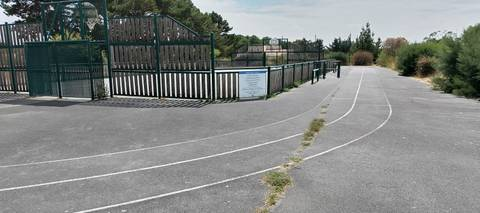
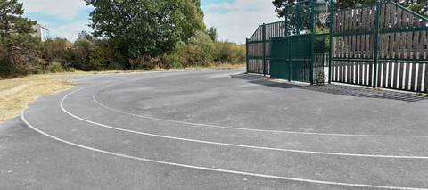

{kind=link}
{kind=link}
Une toute petite piste en goudron, tracée autour d'un city-stade. Difficile d'y faire quoi que ce soit : les virages sont trop serrés et le revêtement est de l'enrobé de cour d'école. Aucun agrès. En accès libre, ce qui reste son seul vrai atout.
Terrain des Loisirs
Rue de Prigny, 44760 Les Moutiers-en-Retz · Loire-Atlantique
Terrain des Loisirs est un équipement d'athlétisme situé à Les Moutiers-en-Retz (Loire-Atlantique), en Pays de la Loire. Il dispose d'une piste en bitume / goudron. Le recensement du ministère la classe « piste isolée » : elle n'appartient pas à un stade d'athlétisme, et son développement n'est déclaré nulle part. L'accès est libre.
Photos


Il manque sûrement une photo
Les sautoirs et les aires de lancer sont ce que la donnée publique décrit le plus mal, et ce qu'on photographie le moins. Un gros plan du sol, une perche bâchée, un bac de sable envahi : chacun ajoute ce qu'aucun champ ne porte.
Envoyer une photoSans compte GitHubPiste
- Revêtement
- Bitume / goudron
- Type de piste
- Piste isolée
- Configuration
- Plein air
- Mise en service
- 2010
Accès & services
- Accès libre
- Oui
- Éclairage
- Non
- Vestiaires
- Non
- Douches
- Non
- Sanitaires
- Oui
Avis des athlètes
Autres sites du département
- Piste du Domaine du Collet (Les Moutiers-en-Retz)
- Complexe sportif Joséphine Baker (Le Clion-sur-Mer)
- Complexe sportif Mickaël Landreau (Arthon-en-Retz)
- Gymnase Municipal J. Girard
- Centre Sportif du Val Saint Martin
- Stade Municipal des Chataigniers
Signaler une erreur ou compléter la fiche
Réf. I441060002 · Source : Data ES + communauté — Data ES, ministère chargé des Sports, Licence Ouverte 2.0. Les données sont déclaratives et peuvent être incomplètes : vérifiez les conditions d'accès avant de vous déplacer.